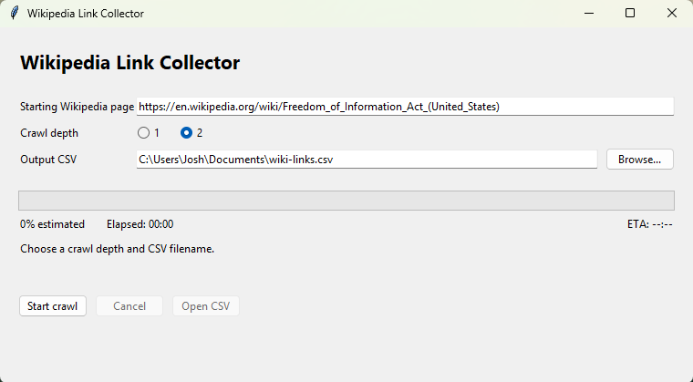

What It Is
The Wikipedia ETL Pipeline is a decoupled data pipeline that collects Wikipedia links starting from a given English Wikipedia article, stores them in PostgreSQL, and uses RabbitMQ to process them asynchronously. By default it starts from the Freedom of Information Act (United States) article, and a desktop launcher wraps the whole thing so a crawl can be run and exported to CSV with a couple of clicks.
The starting page is depth 0, its links are depth 1, and links found on those pages are depth 2. Depth 2 is the maximum supported depth. Recent runs took about 30 seconds at depth 1 and about 3 minutes at depth 2, and a depth 2 export of the default page contained 57,706 rows: the starting page, 343 depth 1 pages, and 57,362 depth 2 pages. Times and counts vary with the starting page, network speed, and Wikipedia response times.
How It Works
The pipeline is split into independent services so that collecting links and storing them can run at different speeds:
Collector → RabbitMQ queue → Storer → PostgreSQL
- Collector: scrapes Wikipedia using a breadth-first search up to the configured depth.
- RabbitMQ: a message queue that decouples collection from storage.
- Storer: consumes messages and writes them to the database. It can be scaled to multiple instances.
- PostgreSQL: stores each link along with its metadata.
Collection
- The collector connects to RabbitMQ and starts at the initial URL at depth 0.
- It fetches each page, extracts the Wikipedia article links, and filters out special pages such as
Category:andHelp:. - Every discovered link is published to the queue as a JSON message containing the URL, the source URL, the depth, and a timestamp.
- It stops exploring beyond the maximum depth, and waits 0.2 seconds between requests to stay polite to Wikipedia.
Storage
- Each storer connects to RabbitMQ and PostgreSQL and listens for messages.
- Links are written to a
linkstable, and duplicates are skipped withON CONFLICT DO NOTHING. - Each message is acknowledged only after it has been processed.
Scaling storers helps when the queue keeps growing, but it does not make the collector fetch pages faster, since the collector is a single sequential worker.
How To Use
Requirements
- Docker Desktop and Docker Compose, installed and running
- Python 3 with Tkinter (included with the standard Windows installer)
- An internet connection and a few MB of free disk space
Desktop Launcher
From the project folder in PowerShell, start the launcher:
cd work\Anata\WikiETLPipeline
py run_pipeline_gui.py
- Keep the default starting page, or enter a full HTTPS English Wikipedia article URL. Category, file, talk, and other special pages are rejected, and the collector checks that the article can be fetched before crawling.
- Choose a crawl depth of 1 or 2.
- Enter a CSV filename or use Browse to pick a location. The default is your Documents folder.
- Press Start crawl. The launcher builds the Docker images, starts four storage workers, and shows crawl and queue progress, an elapsed timer, and an ETA.
- When storage finishes, the launcher exports the rows through the selected depth and opens the CSV in your default spreadsheet application.
Cancel stops collection and saves a partial CSV. Each run uses its own Compose project and removes its containers and data volumes after a successful export. The progress estimate is based on the default starting page, so custom pages may show less accurate percentages and ETAs. Close any other pipeline runs first, since the services use local ports 5432, 5672, and 15672.
Manual Docker Compose
To run the services directly, start everything in the background from the project folder:
docker compose up -d --buildWatch the logs with docker compose logs -f, check the queue in the RabbitMQ management UI on port 15672, and count the stored links with a query against the links table. Stop everything and remove its data with docker compose down -v.